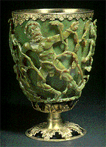

The Lycurgus Cup The Lycurgus Cup is made of glass. It is Roman and dates to the fourth century AD, but the gilded bronze base and rim were added in more recent times. The Cup is surrounded by a frieze showing the myth of King Lycurgus. He is seen here being dragged into the underworld by Ambrosia, who has been turned into a vine. The frieze stands out from the body of the Cup, connected to it only by small shanks or bridges. It belongs to a type of Roman glass called cage cups. One of the very unusual features of the Cup is its colour. When viewed in reflected light, for example in daylight, it appears green. However, when a light is shone into the cup and transmitted through the glass, it appears red. Only a handful of ancient glasses showing this effect are known, all of them Roman. |